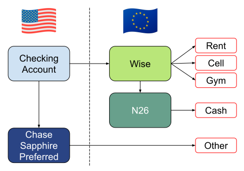

Intro
After living in Europe for just over a year, I think I’ve settled on a close-to-final personal finance setup. I was targeting a setup with minimal (ideally zero) fees, some points/cashback, and avoiding FBAR reporting.
Accounts Setup
Figure 1: Europe Account Configuration
Wise
Living in Europe, you quickly discover you need a European checking account so you can have an IBAN number. Landlords, telecoms, gyms, and anyone else that’s expecting a recurring payment will require you to provide an IBAN number.
We went with Wise based on recommendations from colleagues and our own research. Wise is a FinTech company that makes it super simple to open accounts for many types of currencies (although we stick with Euros). Wise also lets you transfer USD to Euros at a very fair (mid-market) exchange rate and only moderate fees (about 0.7% per $1,000 moved).
The only drawback we’ve experienced is the stingy cash withdral limits. Wise caps you at two free withdawals per month up to a total of 100 Euros. After that you have to pay 1.50 per withdrawal plus 2% fee which it quite hefty. As many establishments only take cash, we anticipated quickly blowing through out 100 Euro allowance per month, so we decided to look for another solution for pulling out cash.
N26
N26 is also a FinTech company and specializes in providing mobile banking services in Europe. It’s our go-to for withdrawing cash. Transfers from Wise to N26 are effectively instant. Their Standard offering requires no fees and allows for 3 free ATM withdrawals per month, which has been more than enough for us.
Chase Sapphire Preferred
Minimizing fees via debit payments is great, but in talking with friends it seems like we were missing out on points/cash back via credit cards. After shopping around, we settled on the Chase Sapphire Preferred Card for several reasons:
- it has zero foreign transaction fees
- 3x points on dining, 2x points on travel, and 1x on everything else.
- Versus Wise (which has an effective -0.7% points due to the fees) using Chase gives a minimum net of +1.7%.
- 60,000 point sign up bonus
- relatively low $95 annual fee (and zero fee for adding an authorized user)
We did look at the Chase Sapphire Reserve Card but just couldn’t get the benefits to outweigh the $550 annual fee.
Another benefit of paying all but the required expenses with a U.S. based card is that you reduce the chance of having to complete FBAR reporting, which gets triggered when the sum of all of your foreign accounts is greater than $10,000.
Finally, having a card with zero foreign transaction fees let me close out a couple of my non-Euro Wise currency accounts (Swiss Francs, British Pounds, etc.). It’s now simpler (and more cost effective) to just use the Chase credit card.
Further Thoughts
I’m sure there’s still more benefits we could wring out of our setup, but we’re probably hitting the point of diminishing returns. So, I’m pretty happy with this configuration!